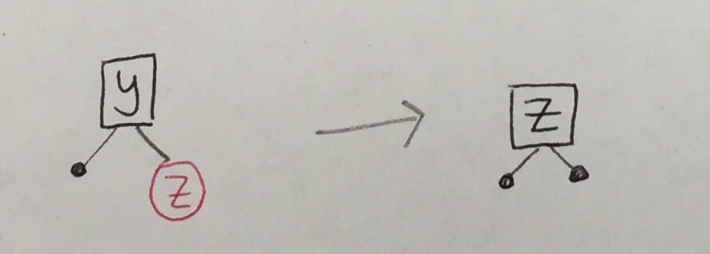
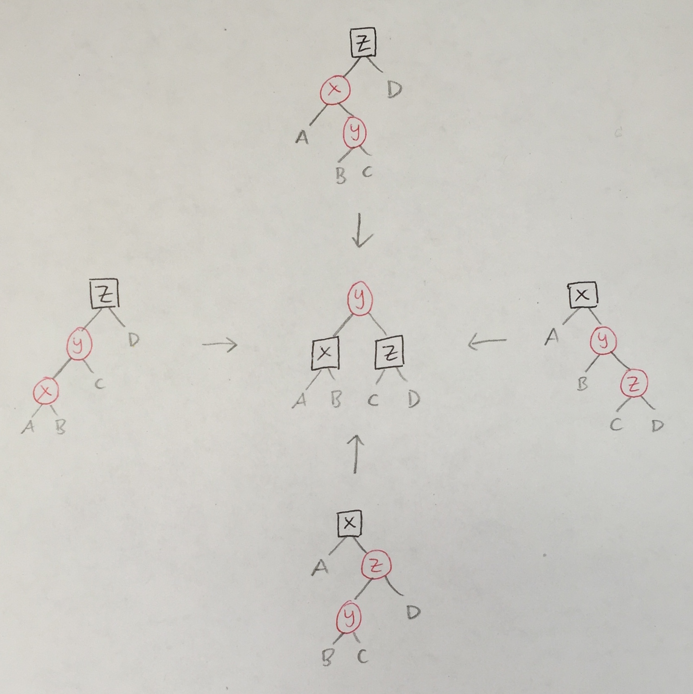

PFP, Spring 2018
Red-Black Trees: Delete
Deleting an element from a red-black tree is considerably harder than inserting one. All of the difficulty stems from the case when the node to remove is black and has no children; the other cases can be handled locally. Matt Might presents a deletion algorithm that extends the temporary-invariant-violation plus bubble-and-rotate approach for insertion to work for deletion. Today, we’ll reformulate his approach using slightly different terminology and drawing conventions to match the ones we used last time. The code below is found in RedBlackDelete.elm.
There will be new kinds of temporary invariant violations, tracked using three new kinds of nodes:
- the black empty tree
BEwhich counts as one black node, - the double black node
T BB left x rightwhich counts as two black nodes, and - the double red node
T RR left x rightwhich counts as negative one black node.
We extend our Tree type as follows (differences in terminology and weights compared to the original are noted in parentheses):
type Color
= BB -- +2 "double black" ("double black")
| B -- +1
| R -- 0
| RR -- -1 "double red" ("negative black")
type Tree a
= E -- 0 "empty" ("black leaf" +1)
| BE -- +1 "black empty" ("double black leaf" +2)
| T Color (Tree a) a (Tree a)We extend our convention of drawing square boxes for Black nodes and round circles for Red nodes to the new kinds of Trees:
Balance: Redux
Before we start, let’s split the original balance function into pieces, which will set us up for some changes later. The Balance alias is shorthand for the type of balance as before, and the new BalanceMaybe alias describes balancing functions that may or may not perform a transformation:
type alias Balance comparable =
Color -> Tree comparable -> comparable -> Tree comparable -> Tree comparable
type alias BalanceMaybe comparable =
Color -> Tree comparable -> comparable -> Tree comparable -> Maybe (Tree comparable)The four rotation cases of balance can be factored into a one function …
balance_B_R_R : BalanceMaybe comparable
balance_B_R_R color l val r =
case (color, l, val, r) of
(B, T R (T R a x b) y c, z, d) -> Just <| T R (T B a x b) y (T B c z d)
(B, T R a x (T R b y c), z, d) -> Just <| T R (T B a x b) y (T B c z d)
(B, a, x, T R (T R b y c) z d) -> Just <| T R (T B a x b) y (T B c z d)
(B, a, x, T R b y (T R c z d)) -> Just <| T R (T B a x b) y (T B c z d)
_ -> Nothing… and the default case can be handled as follows:
balance : Balance comparable
balance c l val r =
Maybe.withDefault (T c l val r) (balance_B_R_R c l val r)We use the function
Maybe.withDefault : a -> Maybe a -> Maybe a
Maybe.withDefault x mx =
case mx of
Nothing -> x
Just x -> xto provide a “default” value in case the balance_B_R_R function does not perform a rotation.
We will define additional re-balancing functions later. To stitch them together easily (that is, to try one after another until one succeeds), we define a helper function for “adding” (or “or-ing”) Maybe values:
maybePlus : Maybe a -> Maybe a -> Maybe a
maybePlus mx my =
case mx of
Just x -> mx
Nothing -> myDeletion Algorithm: Overview
There are three phases in the algorithm.
1. Removal
To remove an element y, we first need to traverse the Tree, making left or right turns as dictated by the search order property until we find y or reach an Empty.
Empty
If we reach Empty, there is nothing to remove.
Node with 0 Children
If we find y at a node with zero children, there are two cases.
|
Node with 1 Child
Now, let’s say we find y at a node with one child. The following six cases are impossible, the first two because the original tree cannot have red-red violations and the last four because the original tree would not have satisfied the black height property.
There are only two cases that can appear. In both cases, we can locally re-establish the red-black tree invariants:
|  |
Node with 2 Children
Lastly, let’s say we find y at a node with two children. We can reduce this case to the removal of a node with zero or one child (specifically, the rightmost node in the left subtree of y):
2. Bubbling
If the removal phase converts a black node to a black empty, the black empty must be bubbled upwards and dealt with. There are six configurations in which a black node could have been transformed to BE.
| 1a |
|
|
| 2a |
This may introduce a |
|
| 3a |
A new |
There are three cases analogous to the above:
| 1b | ||
| 2b | ||
| 3b |
Some transformations above introduce double black nodes that, like black empties, must be bubbled upwards. So, there are six more cases analogous to the ones above.
In each case above, the transformation re-colored the parent with one more unit of black and re-colored each child with one less. The same strategy will apply to the new cases.
| 1a’ |

|

|
1b’ |
| 2a’ |

|

|
2b’ |
| 3a’ |

|

|
3b’ |
3. Rebalancing
The last aspect of the algorithm is to implement the two new re-balancing functions to clean up the effects of bubbling.
Recall the original balance_B_R_R (below, left). The four cases for balance_BB_R_R (below, right) are similar.
|  |
Because only red nodes turn into double red ones, there are only two cases that balance_BB_RR must handle.
In both cases, the original balance_B_R_R must be called (at most once) to handle a new R/R violation that may be introduced.
Deletion Algorithm: Code
We will now implement the three steps.
3. Rebalancing
The balance_BB_R_R function is quite similar to balance_B_R_R:
balance_BB_R_R : BalanceMaybe comparable
balance_BB_R_R color l val r =
case (color, l, val, r) of
(BB, T R (T R a x b) y c, z, d) -> Just <| T B (T B a x b) y (T B c z d)
(BB, T R a x (T R b y c), z, d) -> Just <| T B (T B a x b) y (T B c z d)
(BB, a, x, T R (T R b y c) z d) -> Just <| T B (T B a x b) y (T B c z d)
(BB, a, x, T R b y (T R c z d)) -> Just <| T B (T B a x b) y (T B c z d)
_ -> NothingOne more new balancing function:
balance_BB_RR : BalanceMaybe comparable
balance_BB_RR color l val r =
case (color, l, val, r) of
(BB, T RR (T B a w b) x (T B c y d), z, e) -> Just <| T B (balance B (T R a w b) x c) y (T B d z e)
(BB, a, w, T RR (T B b x c) y (T B d z e)) -> Just <| T B (T B a w b) x (balance B c y (T R d z e))
_ -> NothingFinally, we stitch them all together:
balance : Balance comparable
balance c l val r =
balance_B_R_R c l val r
|> maybePlus (balance_BB_R_R c l val r)
|> maybePlus (balance_BB_RR c l val r)
|> Maybe.withDefault (T c l val r)2. Bubbling
We define two helper functions for incrementing and decrementing a node’s color:
incr c =
case c of
BB -> Debug.crash "incr BB"
B -> BB
R -> B
RR -> R
decr c =
case c of
BB -> B
B -> R
R -> RR
RR -> Debug.crash "decr RR"The 12 cases for our bubbling function are organized according to the three tables above. If we wanted to, we could also factor this function into smaller pieces like we did for balance.
bubble_BE_and_BB t =
case t of
-- cases 1a, 2a, 3a
T c1 (T c2 a x b) y BE ->
case (c1, c2) of
(R, B) -> balance (incr c1) (T (decr c2) a x b) y E
(B, B) -> balance (incr c1) (T (decr c2) a x b) y E
(B, R) -> balance (incr c1) (T (decr c2) a x b) y E
_ -> t
-- cases 1b, 2b, 3b
T c1 BE y (T c3 c z d) ->
case (c1, c3) of
(R, B) -> balance (incr c1) E y (T (decr c3) c z d)
(B, B) -> balance (incr c1) E y (T (decr c3) c z d)
(B, R) -> balance (incr c1) E y (T (decr c3) c z d)
_ -> t
-- cases 1a', 1b', 2a', 2b', 3a', 3b'
T c1 (T c2 a x b) y (T c3 c z d) ->
case (c1, c2, c3) of
(R, B, BB) -> balance (incr c1) (T (decr c2) a x b) y (T (decr c3) c z d)
(R, BB, B) -> balance (incr c1) (T (decr c2) a x b) y (T (decr c3) c z d)
(B, B, BB) -> balance (incr c1) (T (decr c2) a x b) y (T (decr c3) c z d)
(B, BB, B) -> balance (incr c1) (T (decr c2) a x b) y (T (decr c3) c z d)
(B, R, BB) -> balance (incr c1) (T (decr c2) a x b) y (T (decr c3) c z d)
(B, BB, R) -> balance (incr c1) (T (decr c2) a x b) y (T (decr c3) c z d)
_ -> t
_ -> t1. Removal
First, the case for removing a node y with two (non-empty) children:
rem_2_children c left y right =
let remove_max t =
case t of
T R E x E -> (x, E) -- cases 1a/1b
T B E x E -> (x, BE) -- cases 2a/2b
T B (T R E w E) x E -> (x, T B E w E) -- cases 3a/3b
T c l v r ->
let (x, r2) = remove_max r in
(x, T c l v r2)
_ -> Debug.crash "rem_2_children"
in
let (x, new_left) = remove_max left in
T c new_left x rightLastly, the top-level removal procedure. As with insert, a helper function rem does the traversal, and then the last step is to color the resulting root node black; this is okay no matter whether the root is red, black, or double black.
remove : comparable -> Tree comparable -> Tree comparable
remove x t =
case rem x t of
T _ l y r -> T B l y r
_ -> Debug.crash "remove E"
rem : comparable -> Tree comparable -> Tree comparable
rem n t =
case t of
BE -> Debug.crash "rem BE"
E -> E
-- 0 children
T R E x E -> if n == x then BE else t
T B E x E -> if n == x then T BB E x E else t
-- 1 child
T B (T R E x E) y E -> if n == y then T B E x E else t
T B E y (T R E z E) -> if n == y then T B E z E else t
T _ E _ _ -> Debug.crash "rem"
T _ _ _ E -> Debug.crash "rem"
-- 2 children
T c l y r ->
if n < y then balance c (bubble_BE_and_BB (rem n l)) y r
else if n > y then balance c l y (bubble_BE_and_BB (rem n r))
else {- n == y -} rem_2_children c l y rCalls to bubble_BE_and_BB may return trees with red roots (via balance_B_R_R via balance), so we propagate these red-red violations upwards and call balance to fix downward violations. We use Debug.crash for the cases that should never appear.
Reading
Optional
- The Missing Method: Deleting from Okasaki’s Red-Black Trees, by Matt Might